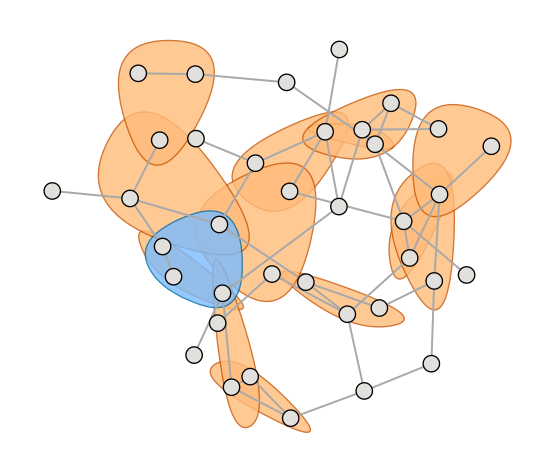

About Hypergraphx-data
Hypergraphx-data is a comprehensive repository of higher-order network datasets curated to facilitate research and analysis in the field of complex systems. The repository encompasses a diverse collection of datasets representing various real-world systems, including social networks, biological systems, collaboration networks, and more. Each dataset is meticulously documented, providing essential information such as data source, format, and relevant metadata to ensure ease of use for researchers and practitioners.
About Hypergraphx
Hypergraphx is a Python library for the analysis of real-world complex systems with group interactions and provides a comprehensive suite of tools and algorithms for constructing, visualizing, and analyzing hypergraphs. The library is designed to be user-friendly and accessible, with a wide range of functionalities that can be applied to a diverse set of applications and use cases.

Ecosystem highlights
- HGX allows storing higher-order data as hypergraphs and converting them to bipartite networks, maximal simplicial complexes, higher-order line graphs, dual hypergraphs, and clique-expansion graphs.
- Our library provides a variety of higher-order centrality measures for nodes and hyperedges, based on participation in different subhypergraphs, spectral approaches, and shortest paths and betweenness flows.
- HGX implements higher-order motif analysis and provides an approximated algorithm for motif analysis based on hyperedge sampling, which can speed up computations by orders of magnitude with minimal compromise in accuracy.
- Our library includes spectral methods to recover hard communities, generative models to extract overlapping communities and infer hyperedges, and methods to capture assortative and disassortative community structure and core-periphery organization in higher-order systems.
- We offer various tools to filter the most informative higher-order interactions by extracting statistically validated hypergraphs and identifying significant maximally interacting node groups.
- HGX includes a synthetic hypergraph samplers library, implementing models such as Erdős-Rényi, scale-free, configuration, and community-based models. It also features a higher-order activity-driven model for temporal group interactions.
- We provide functions to simulate and analyze dynamic processes on higher-order networks, including synchronization, social contagion, and random walks.
- HGX is highly flexible, allowing the storage and analysis of hypergraphs with a rich set of features associated with hyperedges, including interactions of varying intensity, direction, sign, temporal variation, and membership in different layers of a multiplex system.
- Our library includes various visualization tools to gain visual insights into the higher-order organization of real-world systems.
Hypergraphx-data authors
- Quintino Francesco Lotito (Central European University, Austria)
- Lorenzo Betti (Central European University, Austria)
- Berné Nortier (Central European University, Austria)
- Alberto Montresor (University of Trento, Italy)
- Federico Battiston (Central European University, Austria)
Disclaimer
The data on this website are processed versions of the original sources, made easy to use with Hypergraphx and, through the Hypergraph Interchange Format (HIF), compatible with other hypergraph Python libraries. These changes help users work with the data smoothly, while respecting the original authors’ intent to share their work publicly.
Attribution
Please acknowledge usage as follows:
- When using data from Hypergraphx-data, please cite the works listed on the dataset’s description page. A copy-and-paste BibTeX entry referencing the upstream source of the data is provided on each page.
- To reference the repository as a whole, please cite Lotito, Quintino Francesco, et al. “Hypergraphx-data: a repository for higher-order network data,” 2025 (working paper).
-
When using the Hypergraphx python library, please cite
Lotito, Quintino Francesco, et al.
“Hypergraphx: a library for higher-order network analysis,”
Journal of Complex Networks
11.3 (2023): cnad019.
Copied! @article{lotito2023hypergraphx, title={Hypergraphx: a library for higher-order network analysis}, author={Lotito, Quintino Francesco and Contisciani, Martina and De Bacco, Caterina and Di Gaetano, Leonardo and Gallo, Luca and Montresor, Alberto and Musciotto, Federico and Ruggeri, Nicol{\`o} and Battiston, Federico}, journal={Journal of Complex Networks}, volume={11}, number={3}, pages={cnad019}, year={2023}, publisher={Oxford University Press} }
Contact us
Have questions, feedback, or collaboration ideas? Reach out:
Acknowledgments
F. B. acknowledges support from the Austrian Science Fund (FWF) under projects 10.55776/PAT1052824 and 10.55776/PAT1652425.
A. M. acknowledges support from the European Union through Horizon Europe CLOUDSTARS project (101086248).